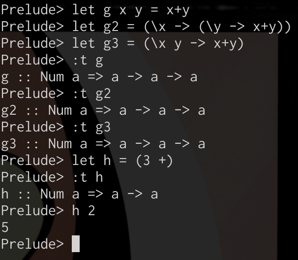
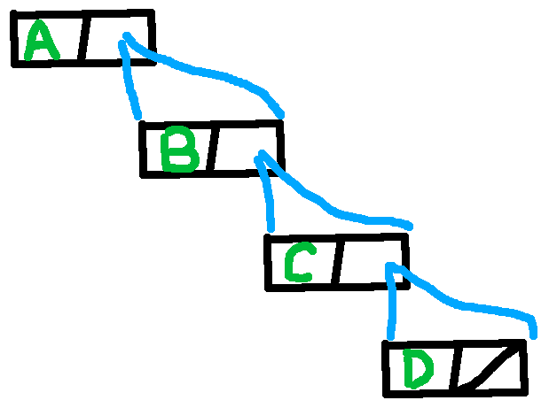
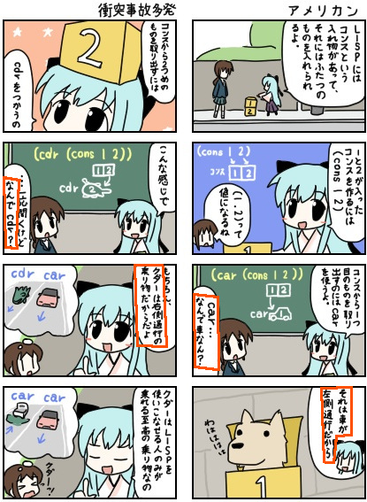

この冬はSKIで遊ぼう！
新λ生に差をつける 関数型言語λ門
「今年は関数型言語やりたいですね」
「なんで？」
「未年だけに、ラムダ」
— Hideyuki Tanaka (@tanakh) 2015, 1月 6$ whoami
- よくC++書いてる
- C++14いいねぇ
- gcc-5.0はよ来い
- C++17はよ来い
- メタプログラミングも好き
- XML直打ち勢
- XHTML5, docbook5, MathML, RDF, ...
- SVGやCOLLADAなどにも興味あり
- OpenGLわからんつらい
- ここ1年、三角と四角とティーポットしか表示してない
- SKIコンビネータ手書き勢
話題: λ
話題: λ
- 「ラムダ」とは何か
- 関数型言語とはどのようなものか
- “純粋関数型言語”は何がどう違うのか
注意:
あまり厳密な話はできないので、マサカリ投擲はほどほどにお願いします
関数と値
-
\( f(x) = 3x + 2 \)
なるほど、\(f\)は\(x\)を受け取って\(3x+2\)を返す関数なんだな
→関数
-
\( f(3) \)
関数fに値3を与えたときの値か……
\( 3 \times 3 + 2 \)だから11だな！→値
-
\( g(a) \)
→値？関数？？
\( g(a) \) は
「値aを受け取る関数g」
と
「関数gに値aを与えたときの値」
とどちらなのか？
偉い人たちが考えた結果
「関数本体と、関数が受け取る引数と、関数に引数を渡したときの結果が全部区別できればいいんだよね？」
| 関数本体 | \( λx . 3 \times x + 2 \) |
| 関数\( λx . 3 \times x + 2 \)が受け取る引数 | \( x \) |
| 関数\( λx . 3 \times x + 2 \)に引数 \( a \)を渡したときの結果 | \( (λx . 3 \times x + 2) a \) |
- 関数は
\( λ 引数として使う文字 . 式 \)の形式
- 関数適用は並べるだけ
- 関数と、適用する引数の区別が付くように、(引数でなく)関数を括弧で括る
区別できるようになった
-
\( f = (λx . 3x+2) \)
→fはxを受け取って3x+2を返す関数( ℝ → ℝ )
-
\( f \ 3 = (λx . 3x+2) \ 3 →_β 11 \)
→f 3は引数(値)3に関数fを適用した結果(値)( ℝ )
-
\( g \ a \)
→g aは引数aに関数gを適用した結果
-
\( g = (λa . ??? ) \)
→gは引数aを受け取る関数
\( g(a) \) なんてものはなかった
λ計算のルール
定義
-
記号(identifier)は式
<expr> ::= <identifier>
\(a\)とか\(x\)とか。
-
記号を受け取って式を返す関数も、式
<expr> ::= (λ<identifier> . <expr>)
\( (λx . y \ x) \) ←こんなのとか。
-
式に式を適用した結果も、式
<expr> ::= (<expr> <expr>)
\( y \ x \) とか、 \( (λx . y \ x) \ a \) とか。
ちなみに関数適用は左結合。 \( x y z = (x y) z \)
計算手順(β簡約)
-
仮引数の文字を、(括弧で括った)実際の引数で置換する。
\( ((\lambda V.E) \ E') →_\beta E[V:=E'] \)
たとえば \( (λx . x+3) \ 5 \) なら、\(x\)に5を入れて\((5)+3\)。
\( (λx . x \ 2) \ (y \ 3) \) なら、\(x\)に \( y \ 3 \)を入れて\( (y \ 3) \ 2 \)。 - くりかえす。
- これ以上適用できなくなったら終わり。
実際には利用する文字が重複したら別のを利用する(α変換)とかの処理が入る(大したことないので紹介は省略)。
何がすごいの？
-
λ計算はチューリング完全
もちろん条件分岐やループや再帰が書ける -
計算が文字列の置換だけで行える
"意味"などは不要。機械的に計算。 -
計算に使う定義やルールがとても少ない(α変換、β簡約、η変換の3つくらいしかない)。
しかも外部に事前に用意しておく必要のある定数などが存在しない -
「関数を受け取って関数を返すような関数」(高階関数)なども自然に記述できる。
たとえば身近なものだと、
- 微分演算子: (ℝ → ℝ) → (ℝ → ℝ)
- 多項式の次数: (ℝ → ℝ) → ℕ
機械的な処理だけでチューリング完全な計算を遂行できる"コンピュータっぽさ"を持ちつつ、
具体的なコンピュータの実装を感じさせない抽象性
→「CPUの声が聞こえない」
「関数を返す関数」
「実数\(x\)を受け取り、「実数\(y\)を受け取り、\(x+y\)を返す関数」が作りたい！」
| 実数\(y\)を受け取り、\(x+y\)を返す関数\(f\) | \( (λy . x + y ) \) |
| 実数\(x\)を受け取り、「実数\(y\)を受け取り、\(x+y\)を返す関数」を返す関数\(g\) | \( (λx . \)\( (λy . x + y ) \)\( ) \) |
多変数関数の定義としては\(g\)みたいなのが使えそう！
\( g \ 3 \ 2 → (λy . 3 + y) 2 → 3 + 2 \)
省略記法
\( (λx . (λy . <expr>)) \)
を
\( (λx . λy . <expr>) \)
とか
\( (λx \ y . <expr>) \)
\( (λxy . <expr>) \)
と書いてよいこととする。
\( g = (λx \ y . x + y) \)
関数の型
\( g = (λx \ y . x + y) \)
数学っぽく書くなら
\( g : (ℝ \times ℝ) → ℝ \)
λによる表記の方を見てみると……
\( g = (λx . (λy . x + y)) \)
| \(g\)は | 実数\(x\) | を受け取って | ( | 実数\(y\) | を受け取って | 実数を返す関数 | )を返す関数 |
| \(g : \) | \( ℝ \) | \( → \) | \( ( \) | \( ℝ \) | \( → \) | \( ℝ \) | \( ) \) |
\( g : ℝ → (ℝ → ℝ) \)
一方で……
\( g = (λx \ y . x + y) \)
| \(g\)は | 実数\(x\) | を受け取って | 実数\(y\) | を受け取って | 実数を返す関数 |
| \( g : \) | \( ℝ \) | \( → \) | \( ℝ \) | \( → \) | \( ℝ \) |
\( g : ℝ → ℝ → ℝ \)
カリー化(currying)
「\( ℝ → (ℝ → ℝ) \)」
と
「\( ℝ → ℝ → ℝ \)」
は同じだったんや……！
→「→」を右結合として見れば、単なる括弧の省略に過ぎない
とはいえ、\( g(x, y) : (ℝ \times ℝ) → ℝ \)について
「\( g(x) \) は『実数\(y\)を受け取ってx+yを返す関数』だ！」
と主張するのも違和感がある……
(というか常識的に考えて変)
そこで
多変数関数を、「「「関数を返す関数」を返す関数」を返す……」という形式に置き換える
( \( (ℝ \times ℝ) → ℝ \)
を
\( ℝ → (ℝ → ℝ) \)
に変換する)
ことを、「カリー化」という。
また、引数の一部だけを指定することを「部分適用」という。
カリー化の例
全ての関数をデフォルトでカリー化してしまうHaskellでの様子をご覧ください。 
-
- \( g(x, y) = x+y \)
- \( g2 = (λx . (λy . x+y)) \)
- \( g3 = (λx \ y . (x+y)) \)
数 → 数 → 数) -
let h x = (3 +)
これは数学っぽく見るとおかしいが、Haskellでは「+」もカリー化されていて
\( + : Num → Num → Num \)
なので、単なる部分適用。
余談: カリーって何さ
Haskell Brooks Curry (1900-1982)
アメリカの数学者、論理学者。 1982年に一度人間をやめるも、30年の時を経て日本で再び「擬人化」されることとなる。
余談: uncurrying
カリー化の反対の操作、uncurrying(非カリー化)も存在する。

「λ計算はチューリング完全」
λの万能性を見ていこう
「λ計算はチューリング完全」
今までに使ってた例:
\( (λx . 3 \times x + 2) \)
↑λ計算のルール以外のやつ(×、＋)使ってるじゃん
λ計算のルールだけで計算するなら、「自然数」や「加減算」なども、全て記号(identifier)と関数だけで表現できる必要がある。
更に、実用的にプログラミングしたいなら「データ構造」や条件分岐、ループなども関数だけで表現できる必要がある。
とりあえずの目標
- 自然数を表現したい
- 加減算や乗算を表現したい
- データ構造を表現したい
- 繰り返し、再帰を表現したい
このくらいできれば、まあ実用的なプログラム書けそう
λで自然数
Church numerals
Alonzo Church: めっちゃすごい人(Wikipedia見て)
自然数nを
\( (λf \ λx . \)\(f^n \ x\)\( ) \)
すなわち、「fとxを受け取って、xにfをn回適用したものを返す関数」と定義した。
- \( 0 := (λfx . x) \) ← fを0回適用
- \( 1 := (λfx . f \ x) \) ← fを1回適用
- \( 2 := (λfx . f \ (f \ x)) \) ← fを2回適用
- \( 3 := (λfx . f \ (f \ (f \ x))) \) ← fを3回適用
- …
たとえば \( 3 \ g \ y →_β g \ (g \ (g \ y)) \)
自然数を「回数」で表現した→とてもシンプル
しかも、「n回繰り返し」も実装できた！
λで加算、乗算(1)
「後続数」(successor)を作る
\(SUCC \ n →_β n+1 \) になってほしい
SUCC: nを受け取り、「fとxを受け取り、xにfをn+1回適用したものを返す関数」を返す関数
「n+1回適用」→「n回適用したやつに、さらに1回だけ適用すればよくね？」
\( SUCC = (λn . (λfx . f \ (n \ f \ x))) \)
「\( n \ f \ x \)」が「n回適用したやつ」
「\( f \ (n \ f \ x ) \)」が「さらに1回(=合計n+1回)適用したもの」
「1回だけ適用したやつに、追加でn回適用」と考えても良い。
\( SUCC = (λn . (λfx . n \ f \ (f \ x))) \)
同じ挙動でも、複数の実装が有り得る
めっちゃ簡単
λで加算、乗算(2)
加算
「fをxにm回適用したやつ」(つまりn)に「さらにfをn回適用」すれば、
「fをxにm+n回適用したやつ」が出てくる。
\( PLUS = (λmnfx . n \ f \ (m \ f \ x)) \)
実際にやってみると……
\( PLUS \ 3 \ 2 \ f \ x \)
\( →_β (λmnfx . n \ f \ (m \ f \ x)) \ 3 \ 2 \ f \ x \)
(仮引数mを3に置換)
\( →_β (λnfx . 3 \ f \ (m \ f \ x)) \ 2 \ f \ x \)
(仮引数nを2に置換)
\( →_β (λfx . 3 \ f \ (2 \ f \ x)) \ f \ x \)
(仮引数f(内側)をf(外側)で置換)
\( →_β (λx . 3 \ f \ (2 \ f \ x)) \ x \)
(仮引数x(内側)をx(外側)で置換)
\( →_β 3 \ f \ (2 \ f \ x) \)
(\(2 \ f \ x\)を先に計算)
\( →_β 3 \ f \ (f \ (f \ x)) \)
(残る \( 3 \ f \ A \)の部分を計算)
\( →_β f \ (f \ (f \ (f \ (f \ x)))) \)
どうせこんな簡単な例は重要ではないので暇なときにでもやってみてください
λで加算、乗算(3)
乗算
「fをm回適用」をn回適用すれば、fを合計m×n回適用したことになるよね！
\( MULT = (λmnfx . n \ (m \ f) \ x) \)
特段面白いわけでもないので例は略
何かの罠かと思うほど簡単
減算、の前に……
単純に考えれば、たとえば\(3-1\)は
\( f \ (f \ (f \ x)) \)を\( f \ (f \ x) \)にする→「fをはがす処理」になる
\(1-1\)で考えてみると……
\( (-1) \ f \ (f \ x) →_β x \)
→\((-1) \ f\)は\(f\)の逆関数！？
「外側の関数をはがす」は「逆関数を適用」になる。
そんなのもちろん多くの場合無理だしつらいので、別のアプローチをとる。
「リスト [ 0, 0, 1, 2, 3, 4, ... ] のn番目の要素を取ってくれば、n-1が出てくる」
→「リストを結合する」「無限リストを生成する」「n番目の要素を取る」等が必要
先にデータ構造と再帰を手に入れます
データ構造: ペア(consセル)
要件:
\( FIRST \ (PAIR \ x \ y) →_β x \)
\( SECOND \ (PAIR \ x \ y) →_β y \)
↑先述の通り、PAIRを「はがす」のは無理
逆転の発想:「FIRSTを前に置いて駄目なら、後ろに置けばいいじゃん」
\( (PAIR \ x \ y) \ FIRST →_β x \)
\( (PAIR \ x \ y) \ SECOND →_β y \)
→なんか出来そう
実際できる。
\( PAIR := (λab . (λc . c \ a \ b)) \)
とすると、
\( PAIR \ a \ b \ FIRST →_β FIRST \ a \ b →_β a \)
\( PAIR \ a \ b \ SECOND →_β SECOND \ a \ b →_β b \)
どう見ても
\( FIRST = (λab . a) \)
\( SECOND = (λab . b) \)
です、本当にありがとうございました
実はこれだけで十分だったりする
ペアがあれば二分木が作れる。
二分木があればリストが作れる！
二分木でリスト[A, B, C, D]を表現する例:

LISPもHaskellも「リスト」はこの形式で実装されている。
cons
LISP等ではPAIRをcons、FIRSTをcar、SECONDをcdrという。
ちなみにcarは
Contents of the Address part of Register number、
cdrは
Contents of the Decrement part of Register numberらしい。
(詳細はwikipedia参照)
リストとしての使い方
l=[A, B, C, D] すなわち l = (cons A (cons B (cons C (cons D ゴミ)))) の図:
(ゴミは何でもいい。Schemeとかだと'()、Haskellだと[]というのを入れたりする)
- A: (car l) → A
- B: (car (cdr l)) → (car (cons B (cons C (cons D ゴミ)))) → B
-
C: (car (cdr (cdr l)))
→ (car (cdr (cons B (cons C (cons D ゴミ)))))
→ (car (cons C (cons D ゴミ))) → C - ……
「n回cdrを適用したやつにcarを適用すれば、n番目の要素を取り出せる」(nは自然数)(0は自然数)
\( NTH \ n \ l → l \ CDR \ CDR \ \cdots \ CDR \ CAR \)
\( NTH := (λnl . n \ (λx . x \ CDR) \ l \ CAR) \)
(「\( (λx . x \ CDR) \)」は、「受け取った引数にCDRを適用する」関数)
おぼえかた
 マンガで分かるLisp (Section 1.2) より条件分岐
条件分岐もconsを使って実装できることに、お気付きだろうか……？
\( IFTHENELSE := CONS \)
\( TRUE := CAR \)
\( FALSE := CDR \)
……するとこうなる。
\( (IFTHENELSE \ a \ b) \ TRUE →_β (CONS \ a \ b) \ CAR \)
\( →_β CAR \ a \ b →_β a \)
\( (IFTHENELSE \ a \ b) \ FALSE →_β (CONS \ a \ b) \ CDR \)
\( →_β CDR \ a \ b →_β b \)
\( FALSE = 0 = (λab . b) \)になるオマケつき
論理演算(AND, OR, NOT)
AND x y: 「xがTRUEならyの値、xがFALSEならFALSEを返す」
→素直に実装すればおｋ
\( AND := (λxy . (IFTHENELSE \ y \ FALSE) \ x) \)
→簡約できるので簡約すると、こうなる:
\( AND := (λxy . x \ y \ FALSE) = (λxy . x \ y \ (λab . b)) \)
同じ調子でORも。
OR x y: 「xがTRUEならTRUE、xがFALSEならyの値を返す」
\( OR := (λxy . x \ TRUE \ y) = (λxy . x \ (λab . a) \ y) \)
NOTは1引数なのでもっと簡単。
NOT x: 「xがFALSEならTRUE、xがTRUEならFALSEを返す」
\( NOT := (λx . x \ FALSE \ TRUE) = (λx . x \ (λab . b) \ (λab . a)) \)
せっかくなので例のアレも
\( NAND := (λxy . (NOT \ (AND \ x \ y))) \)
ハイNANDできたよ！！λ計算は†すごい†ね！！！
再帰(1)
λ計算では「無名再帰」ができる！
→名前の付いていない関数を再帰させることができる
たとえば階乗
(define (isZero num) (= num 0))
; Schemeでの階乗
(define (fact num)
(if (isZero num)
; num=0なら 0!=1
1
; num≠0なら num * fact(num-1)
(* num (fact (- num 1))) ; ←「fact」という名前が必要！
)
)再帰(2)
(define (isZero num) (= num 0))
; Schemeでの階乗
(define (fact num)
(if (isZero num)
; num=0なら 0!=1
1
; num≠0なら num * fact(num-1)
(* num (fact (- num 1))) ; ←「fact」という、自分自身の名前が必要！
)
)これを……
こう。
(define (isZero num) (= num 0))
; 再帰用の関数
(define (pass-self fun arg) (fun fun arg))
; Schemeでの階乗の計算本体
(define (fact-body fun num)
(if (isZero num)
; num=0なら 0!=1
1
; num≠0なら num * fact(num-1)
(* num (fun (- num 1))) ; ←「fun」は引数
)
)
(define (fact2 num) (pass-self fact-body num))
; (fact2 2) => (fact-body fact-body 2)
; ↑fact-bodyの仮引数「fun」もfact-body自身になる再帰(3)
λで書く。
(define (pass-self fun arg) (fun fun arg))
(define (fact-body fun num)
(if (isZero num) 1
(* num (fun (- num 1))) ; ←「fun」は引数
))
(define (fact2 num) (pass-self fact-body num))
PASSSELFは「(適用したい)関数と整数を受け取る」関数、
FACTBODYは「(自分自身と等価な)関数と整数を受け取る」関数。
\( PASSSELF := (λfx . f \ f \ x) \)
\( FACTBODY := (λfx . (ISZERO \ x) \ 1 \ (MULT \ x \ (f \ (PRED \ x)))) \)
せつめい:
\( FACTBODY := (λfx . \)
FACTBODYは、関数\(f\)(階乗する関数)と数\(x\)を受け取り、
\( (isZero \ x) \ 1 \)
\(x\)が0なら1、そうでなければ……
\((MULT \ x \ \)\( (f \ (PRED \ x)) \)\( ) \)
\(x\)と「x-1の階乗」の積を返す。
(なお \(PRED\) はpredecessor、先行の数。SUCCの反対。)
無名再帰ができた
\( FACT2 := (λfx . f \ f \ x) \ (λfx . (ISZERO \ x) \ 1 \ (MULT \ x \ (f \ (PRED \ x)))) \)
FACT2の定義内でFACT2という名前を使っていないことに注目。
(β簡約できるけど、ここでは省略)
あとは、\(ISZERO\)と\(PRED\)ができればおｋ！
ISZERO
ISZEROは、「一度でも適用してしまうとFALSEになる」関数(つまり「AND FALSE」を、n回TRUEに適用してやればいい。
- 0回: TRUE
- 1回: (AND FALSE) TRUE → FALSE
- 2回: (AND FALSE) ((AND FALSE) TRUE) → FALSE
- 3回: (AND FALSE) ((AND FALSE) ((AND FALSE) TRUE)) → FALSE
- ……
素直に実装。
\( ISZERO := (λn . n \ (AND FALSE) \ TRUE) \)
簡約できる。
\( ISZERO := (λn . n \ (λx . FALSE) \ TRUE) \)
↑「引数を無視して問答無用でFALSEにしてしまう関数」をn回適用する、という見方ができる。
あとは\(PRED\)が実装できれば、階乗が実装できたことになる！
PRED
思い…出した！
「リスト [ 0, 0, 1, 2, 3, 4, ... ] のn番目の要素を取ってくれば、n-1が出てくる」
\( PRED := (λn . NTH \ n \ (CONS \ 0 \ (IOTA \ 0))) \)
ここで、\(IOTA \ n\)は無限リスト[n, n+1, n+2, ...]を返す関数。
IOTAの実装
\( PASSSELF := (λfx . f \ f \ x) \)
\( FACTBODY := (λfx . (ISZERO \ x) \ 1 \ (MULT \ x \ (f \ (PRED \ x)))) \)
\( FACT2 := (λfx . f \ f \ x) \ (λfx . (ISZERO \ x) \ 1 \ (MULT \ x \ (f \ (PRED \ x)))) \)
階乗を思い出して……
条件分岐が無い(無限リストだから)分、ちょっと単純。 \( IOTABODY := (λfx . (CONS \ x \ (f \ (SUCC \ x)))) \) \( IOTA := (λn . PASSSELF \ IOTABODY \ n) \)
PRED
\( IOTA := (λfx . f \ f \ x) \ (λfx . (CONS \ x \ (f \ (SUCC \ x)))) \)
\( = (λfx . f \ f \ x) \ (λfx . (λc . c \ x \ (f \ (λgy . g \ (x \ g \ y))))) \)
\( IOTA \ 0 = (λf . f \ f \ (λgx . x)) \ (λfx . (λc . c \ x \ (f \ (λgy . g \ (x \ g \ y))))) \)
\( PRED := (λn . NTH \ n \ (CONS \ 0 \ (IOTA \ 0))) \)
\( = (λn . (λ\)\(m\)\(l\)\(. m \ (λx . x \ (λab . b)) \ l \ (λab . a))\) n \(((λabc . c \ a \ b) \ 0 \ (IOTA \ 0))\)) \)
\( = (λn . n \ (λx . x \ (λab . b)) \ ((λabc . c \ a \ b) \ 0 \ (IOTA \ 0)) \ (λab . a)) \)
\( = (λn . n \ (λx . x \ (λab . b)) \ (λc . c \ 0 \ (IOTA \ 0)) \ (λab . a)) \)
\( = (λn . n \ (λx . x \ (λab . b)) \ (λc . c \ (λfx . x) \ (λf . f \ f \ (λgx . x)) \ (λfx . (λc . c \ x \ (f \ (λgy . g \ (x \ g \ y)))))) \ (λab . a)) \)
……というわけで、「-1」できるようになった。
あとはSUCCからPLUSを作ったのと同じ要領でMINUSを作ろう！(詳細は略)
補足:マシなやり方
たんじゅんな人の考えたPRED
\( PRED := (λn . n \ (λx . x \ 0) \ (λc . c \ 0 \ (λf . f \ f \ 0) \ (λfx . (λc . c \ x \ (f \ (SUCC \ x))))) \ (λab . a)) \)
頭のいい人の考えたPRED
\( PRED := (λn . n (λgk . (g \ 1) \ (λu . SUCC \ (g \ k)) \ k) \ (λv . 0) \ 0) \)
λでプログラミング、パズル要素が多いのでお暇な人はいかがでしょう。
まあ、これから紹介するSKIコンビネータの方がパズルっぽいですが
SKIで遊ぼう！
λ抽象
今更ですが、今まで「式」と呼んでいたやつを「λ項」、 「関数」と呼んでいた「\( (λx . FOO) \)」みたいなのをλ抽象と呼びます
コンビネータ
今まで出てきたλ抽象は全部、「グローバル変数」や「定義済みの定数」(つまり自由変数)を使わない形に書き換えられることに気付きましたか？
これらを「コンビネータ」(日本語では「閉項(closed term)」が近い？)といいます:
-
(λ引数たち . (引数たちだけで構成された式))
はコンビネータ -
(λ引数たち . (引数たちとコンビネータだけで構成された式))
もコンビネータ - 以上にあてはまるものだけがコンビネータである。
コンビネータ論理は、モイセイ・シェインフィンケリとハスケル・カリーによって、記号論理での変数を消去するために導入された記法である。
最近では、計算機科学において計算の理論的モデルで利用されてきている。また、関数型プログラミング言語の基礎にもなっている。
→Haskell Curryすごい！！ (小並感)
SKIコンビネータ
実は、3種類のコンビネータ(S, K, I)だけでチューリング完全であることがわかっている！
- \( S := (λxyz . x \ z \ (y \ z)) \)
- \( K := (λxy . x) \)
- \( I := (λx . x) \)
これだけ。
とはいえ、定義だけ見ても意味がわからない……
イメージとしては:
-
Sabc → ac(bc)
S: 引数を複製、後ろでの結合 -
Kab → a
K: 引数を無視(削除) -
Ia → a
I: 何もしない(恒等写像、id)。ダミー用
実際のところ、
\( SKK = (λxyz . x \ z \ (y \ z)) (λxy . x) (λxy . x) \)
\( →_β (λyz . (λxy . x) \ z \ (y \ z)) (λxy . x) \)
\( →_β (λyz . z) (λxy . x) \)
\( →_β (λz . z) \)
\( = I \)
なので、3種類というより2種類で済む。
SKIコンビネータがチューリング完全という話
λ項をSKIコンビネータだけを使った式に変換するアルゴリズムがある
→そのアルゴリズムであらゆるλ項がSKIコンビネータに置き換えられる
→SKIコンビネータも当然チューリング完全
余談: SKIコンビネータ手打ち
PREDの実装:
``s``s`ks``s`k`s`ks``s``s`ks``s`k`s`k``s`ksk``s``s`ksk`k``s`k`s`k`si``s`k`s`kk``s`k`sik`k`kk`k`k`ki
→自動生成されたやつ(unlambda記法という文法を使っているが、中身は普通にSKIの関数適用)
``s`k`s`k`s`k``si`ki``s`k``s``s`ks``s`kks`kk``s`k``s``s`ksk`k``s`kkk``si`k``s`k`s`k``s`k`sik``ss`ki
→頭をひねって作ったやつ(手打ちの温かみがある)
ちなみに、さっきの無限リストを使ったやり方。長さは自動生成のと同じだった。
変換アルゴリズムは結構文字数が増える感じなので、人間の手打ちでも勝負になる (単純なものほど顕著に差が出る)
SKIコンビネータでの遊び方
0. 0と1の表現を確認する。
0 := (λfx . x)
0 a b →β b
→(0 a) が Iになれば 0 a b →β I b →β b だ……
→aを「無視」したいのでKを使う。
0 a →β K I a →β I
完成！
0 := K I
1 := (λfx . fx) = I
↑ I = (λx . x) で1とはちょっと(型も)違うけど……
1 a b →β a b
I a b = (I a) b →β a b
引数を与えれば全く同じ挙動するし、同一視していいよね！
→これを「η変換」という。
1 := I
SKIコンビネータでの遊び方
1. 2を作る。
SUCC = a としよう。
a f x →β f (f x)
fが2つになるので、複製の「S」が必要っぽい
a = S b cとする。
S b c f x → b f (c f) x
後ろのfとxを結合したいので、b = Sとしてみる。
S f (c f) x → f x (c f x)
→不要なxが結合してしまった。はがせないので駄目。b = S dとして再挑戦。
S d f (c f) x → d (c f) f (c f) x
まだ無理っぽい？b = S d eとして再挑戦。
S d e f (c f) x → d f (e f) (c f) x
これならd,e,fを弄って不要なfを消せそう。
(c f)とxがSの第2・第3引数になってほしいので、d f = Sとする(つまりd = KS。このときd f = K S f →S)。
S (e f) (c f) x → e f x (c f x)
e f x = f、c f x = f xとなればf (f x)の出来上がり。
つまりe = K、c = I。
結局、a = S b c = S (S d e) I = S (S (K S) K) I
2 := S(S(KS)K)I
2. SUCCを作る。
お気付きだろうか。上のやつでc = Iと置かずに放置すると
S(S(KS)K)c f x → f (c f x)
になることを……
SUCC := S(S(KS)K)
SKIコンビネータでの遊び方
こんな感じで、「増やす」「後ろの方を括弧で結合する」「減らす」を意識しながらSKIコンビネータで様々な関数を作っていきましょう。
次の目標: 反転
R a b → b a
となるようなRを見付けよう。
その次の目標: BCKWコンビネータ
-
Bxyz → x(yz)
後ろでの結合 -
Cxyz → xzy
後ろでの入れ替え -
Wxy → xyy
複製
実はBCKWシステム(BCKWコンビネータだけを使った表現)でもチューリング完全！
→SKIとBCKWはそれぞれのコンビネータを互いの表現で書き換えられる
ちなみにこれもHaskell Curryが発見
あとはPLUS、MULT、真偽値やCONS、PREDなどを作りましょう
(ただしPREDはかなり難しい)
この辺りの具体的な試行錯誤のやり方は『簡約！λカ娘」1巻の第1章などが詳しい。
不動点コンビネータ
不動点: f(x) = x となるような点x
引数と結果が同じになる。
(たとえば\( f(x) = x^2 \)の不動点はx=0とx=1)
Q. 「不動点を求める関数(コンビネータ)」は作れるか？
A. Yes
f (g f) = g f
となるような関数gをλ抽象で表現できる。
これを「不動点コンビネータ」という。
f (g f) = g f
分かる気がする。逆に言うと……
g f = f (g f)
= f (f (g f)) = f (f (f (g f))) = …
↑再帰じゃん
不動点コンビネータを使うことで、無名再帰も超簡単に書ける
Yコンビネータ
中でも一番有名なのがYコンビネータ。
Y = (λf . (λx . f (x x)) (λx . f (x x)))
SKIコンビネータでは、
Y = S (K (S I I)) (S (S (K S) K) (K (S I I)))
例のごとく、これもHaskell Curryが発見！
Curryに"圧倒的感謝"🙏🙏😄😄
他にもたくさん
Zコンビネータ、チューリング不動点コンビネータ、etc...
中にはこんなものも。
ただし
L = (λabcdefghijklmnopqstuvwxyzr. (r (t h i s i s a f i x e d p o i n t c o m b i n a t o r)))
SKIコンビネータを実用的に使いたい人へ
unlambda
unlambdaという言語でSKIコンビネータが使える。
unlambda記法(「fをxに適用」を「`fx」と書く記法)によって、括弧を不要とし、文字数を短縮した。
文字の表示とかもできる。わお実用的！
Lazy K
純粋関数型言語。入出力は標準入力と標準出力しか使えない。
SKIコンビネータ(普通の記法とunlambda記法の両方)、Iota、Jotが使える。
Iota
すごい人「SコンビネータとKコンビネータ合体できたらもっと少ない種類の文字でプログラミングできるよな……」
すごい人「できた」
ι = (λx . xSK)
I = ιι、 K = ι(ι(ιι))、 S = ι(ι(ι(ιι)))
↑SとKとIが作れたのでチューリング完全。
これなら関数適用の演算子とιの2種類だけでチューリング完全なプログラムが作れる！！
Jot
| Syntax: | Semantics: |
| F --> e | ^x.x |
| F --> F 0 | [F]SK |
| F --> F 1 | ^xy.[F](xy) |
いろいろ弄る(詳細は略)と、「任意の長さのあらゆるビット列が正当なプログラムとなる」ようなチューリング完全な言語が作れる
→あらゆるプログラムに一意に番号を付けることができる(ゲーデル数)
"実用"言語のλ
C++のλ
template <typename T1, typename T2>
auto add1(const T1 &x, const T2 &y) {
return x + y;
}
// add1(3, 2) => 5
/*
* 本当は
add1(T1 &&x, T2 &&y) {
return std::forward<decltype(x))>(x) + std::forward<decltype(y))>(y);
}
* のようにするのが良いが……
*/
auto add2 = [](const auto &x, const auto &y) {
return x + y;
};
// add2(3, 2) => 5
ンン？
auto add2 = [](const auto &x, const auto &y) {
return x + y;
};これって
struct anonymous__add_lambda_ { // コンパイラ以外が使えない名前
template <typename T1, typename T2>
auto operator()(const T1 &x, const T2 &y) {
return x+y;
}
};だよな？普通のメンバ関数呼び出しじゃん
CPUの声が聞こえる……
CPUの声
- アセンブリ言語等の原始的な手続き型言語やC/C++のユーザから見れば、「関数」は「メモリ上に配置された機械語命令の羅列」でしかない
- 実際、「関数を渡す」のではなく「関数ポインタ(アドレス)を渡す」という動作になる
「関数が機械語命令の羅列」とは、こういうこと
-
0x90はx86ではNOPだから……
__attribute((section(".text"))) int main = 0x90909090; void f1() { puts("world!"); } __attribute((constructor)) void f2() { puts("hello"); } -
関数は機械語バイナリの配列だから……
qsort(array, size, 4, "YXZQQQ\x8b\0+\x02\xc3");qsortの第4引数は本来関数ポインタを渡すところ。
Code Golf [PDF] (7ページ目)
もっと数学寄りの「関数」を
- HaskellやLispでは、関数そのもの(ポインタではない)もオブジェクトであり、別の関数に渡したり、実行時に合成して作ったりできる
- 副作用(後述)の無い処理なら、数学の「関数」っぽい何かとして扱ってもよくない？
- ノイマン型コンピュータ専用でない言語で「計算」を表現したい
副作用と関数の型
純粋(pure)、副作用(side effect)とは
- 関数の戻り値が常に引数のみから定まるとき、関数は純粋であるという
- 関数の戻り値が引数のみからは定まらないとき(内部や外部に"状態"を持っているとき)、関数は純粋でない
- 関数が何らかの"状態"を変更するとき、関数は副作用をもつという。 また、この状態を変更する作用を副作用という
例
- 現在時刻を返す関数(
time()など)は純粋でない(副作用の有無は実装依存)。 - 処理「
i = i+1」は副作用がある。 - 「文字列を画面に表示する」処理には副作用がある(ディスプレイの表示という"状態"を変化させる)。
純粋であること、副作用が無いこと
純粋で副作用が無いと何が良いのか？
- 引数の評価の順番が自由
- たとえば
はどのような出力をするだろうか。int i = 3; printf("%d, %d", ++i, i);++iがiより先に評価(計算)されれば出力は「4, 4」になるだろうし、逆であれば「4, 3」になるかもしれない。 (実際は処理系依存。) -
純粋で副作用が無いと、どの部分式から計算しても(計算が停止したなら)必ず同じ結果になる(チャーチ・ロッサーの定理)
例: λ抽象の\(PLUS\)
\( PLUS \ 3 \ 2 \ f \ x \)
\( →_β \cdots →_β 3 \ f \ (2 \ f \ x) \)
外から先に計算すると
\( →_β f \ (f \ (f \ (2 \ f \ x))) \)
\( →_β f \ (f \ (f \ (f \ (f \ x)))) \)
中から先に計算しても
\( →_β 3 \ f \ (f \ (f \ x)) \)
\( →_β f \ (f \ (f \ (f \ (f \ x)))) \)
-
遅延評価(非正格評価)ができる
→「部分式を、必要になるまで計算せずにおく(不要だったら最後まで計算しない)」ことができる
- たとえば
非正格評価
\( f(x) = x^2 \)
について、 \( f(3+2) \)を考える。
正格評価の場合
\( f(2+3) → f(5) → 5^2 → 5 \times 5 → 25 \)
引数(部分式)を先に評価。 多くの言語で一般的な評価戦略。
非正格評価の場合
\( f(2+3) → (2+3)^2 → (2+3) \times (2+3) → 5 \times 5 → 25 \)
→if-then-elseなどに関わる部分では部分式(や引数の一部)が無駄になることが多い。
必要になるまで部分式の評価を保留できるのは非常に良い。
うまくやれば無限リスト等が活用できる。
-- Haskell
take 10 [1..]
-- => [1,2,3,4,5,6,7,8,9,10]
-- 11以降の不要な部分はそもそも計算されなかった純粋であること、副作用が無いこと
純粋で副作用が無いと何が良いのか？
- 引数の評価の順番が自由
-
計算が依存している情報が明確(引数だけ)なので、デバッグやテストがしやすい。
「環境」を考慮する必要がない- HaskellはI/Oなどをモナドとして純粋な部分と分離することで、入出力を可能にしつつ純粋な関数を書くメリットを享受できるようになっている。
「関数型」の何が良いのか
高階関数による高度な抽象化
foldr (reduce), map, filter等は「関数とリストを受け取っていろいろ計算する」関数。
もちろんループや再帰でも書けるが、より意味が明確になるように抽象化されている。
強力すぎる再帰(ループ)よりもfoldr,map,filterのように意味が明確な抽象化が好まれるのは、強力で原始的なgotoより意味の明確なwhileやifや関数が好まれるのと同じこと。
木構造が見える
関数型言語では関数と値が(構文上では)平等なので、どうしても「適用される何か」と「適用する何か」を「適用」で繋ぐ、という構造になる。
→構文木がはっきり見えて、それが計算と密接に関係している。
(純粋な計算であれば)全ての部分木には値がある
CPUの声が聞こえない
抽象化が高度なため、計算機のアーキテクチャ(特に「ノイマン型」「ハーバード型」の軛)から独立して考えられる。
たとえば並列化あたりなどは作りやすいらしい……？
ただし高速化は普通の手続き型言語とは違った難しさがある
世界が広がる
手続き型言語とは根本的に考え方が異なるので、視野が広がる(とても)
なお、最近の言語では
マルチパラダイムな言語が多くなっている。
C++, D, Ruby, etc...
C++でも関数オブジェクトやlambdaが(CPUの声が聞こえるとはいえ)使えるようになっていたり(或いはTMPできたり)、 Rubyもオブジェクト指向といいつつ関数までオブジェクトとして扱えたり、 関数型言語らしい処理を書ける言語は多い。
まとめ
-
「ラムダ」は「計算」という概念をコンピュータの仕組みに依存しない方法で抽象化したもの。
(むしろλ抽象で書けることこそが「計算」である？) -
関数型言語おもしろいね！
(おもしろいだけでなく、メリットもある) -
brainf*ckより過激な世界がある
SKIコンビネータ楽しい✌ ('ω' ✌ )三 ✌ ('ω') ✌ 三( ✌ 'ω') ✌ - これから関数型言語を勉強した人が「あ、これ知ってる概念だ」となればうれしい
おまけ：何故「λ」なのか(文字通りの意味で)
|
x̂.x
WhiteheadとRusselが説明した要件 |
^x.x
Churchの理解 |
Λx.x
Churchの設計 |
λx.x
Churchのコード |
実際の運用(Haskell) |
実際の運用(Scheme) |
||
実際の運用(javascript) |
実際の運用(C++) |
||
|
x̂.x
顧客(?)が本当に必要だったもの |
|||
ちなみにx̂は、Doulosなど文字の合成によく対応したフォントでないとうまく描画できない。
普通にやるとx̂ のようになる。
参考文献
/